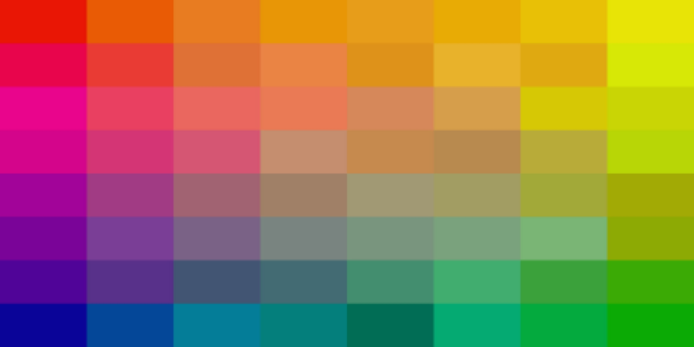

The Art of Hexdec

How 24 bits can create a world of color
On every computer screen are a grid of pixels, displaying thousands upon thousands of different colors at any given moment.
From videos and games to documents and spreadsheets visuals play an important role in how we interact with the digital world.
So what goes into each pixel? How can we get the computer to understand which colors we want to project onto the monitor?
In order to figure this out we must understand two things: how computers interpret colors, and how we communicate these colors
to the computer. This is where hexadecimal numbers come in!
Below we will learn how to split colors into rgb components, how to translate a decimal number into hexadecimal, and finally how
to combine both of these techniques to create color!